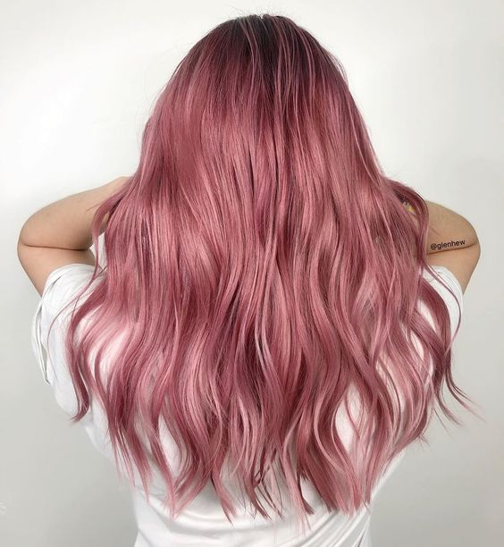
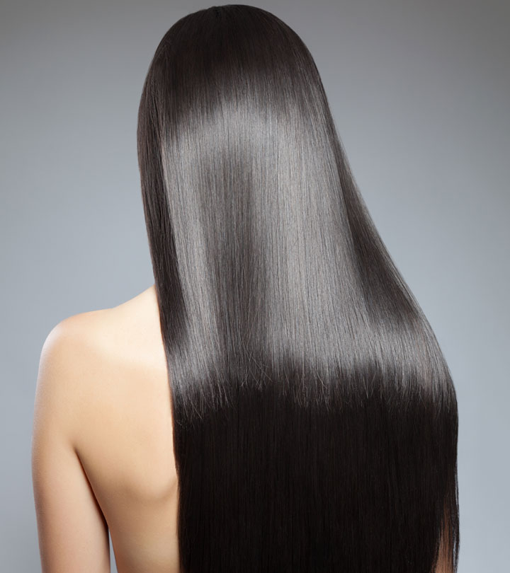

Nega kose kod kuće nije komplikovan proces, samo je važno da znate kada i zašto da koristite određene proizvode. Nakon što pročitate ovaj tekst, mnogi od vas će shvatiti da greše, već u prvim koracima prilikom pranja kose. Svi smo čuli za maske, pakovanja, balzame, regeneratore, ulja… Ali, šta oni zapravo rade našoj kosi? Da li znamo kako da ih pravilno koristimo i kojim redosledom?
Pranje kose je obavezno i spada u postupke redovne higijene, kao i tuširanje, umivanje lica, pranje zuba… Šamponi su namenjeni pranju i čišćenju kose i kože glave. Klasičan šampon se nanosi na mokru kosu i utrljava u teme. Deluje tako što otvara kutikulu dlake, kako bi odstranio suvišne masnoće i nagomilane prljavštine. Danas je ponuda ovih proizvoda toliko raznovrsna da svako može pronaći pravi preparat za sebe. Postoje čak i šamponi za suvo pranje kose, koji se koriste u situacijama kada nismo u mogućnosti da operemo kosu na klasičan način.
Maske ili pakovanja za kosu se nanose uvek na čistu, prethodno opranu kosu. Njihova glavna svrha je da hrane, neguju i hidriraju kosu. Dakle, da bi hranljivi sastojci prodrli u samu strukturu vlasi potrebno je prvo koristiti šampon. Podsećanja radi, šampon otvara kutikulu dlake, čisti kosu i ostavlja slobodnim put za proteine iz pakovanja. Zato je nanošenje maske drugi korak prilikom pranja kose. Pravilna nega kose podrazumeva nanošenje odgovarajuće maske na celu dužinu vlasi, izbegavajući samo teme glave. Potrebno je da neko vreme “odstoji” na kosi, ponekad i da se raščešlja, pa tek onda ispere. Maske se mogu primenjivati prilikom svakog pranja, ili po potrebi. Najvažnije je izabrati pravo pakovanje za kosu i pridržavati se uputstva sa ambalaže.
Nakon što je kosa nahranjena, na scenu stupa balzam, odnosno regenerator. Njegova glavna uloga je da zatvori kutikulu dlake, kako bi kosa duže zadržala sve proteine i kako bismo olakšali češljanje. Ukoliko preskočimo ovaj korak, rizikujemo da dođe do dodatnog lomljenja, pucanja i oštećenja kose, već prilikom prvog češljanja. Osim toga, balzami za kosu dodatno ojačavaju i štite vlasi od spoljašnjih uticaja.
 